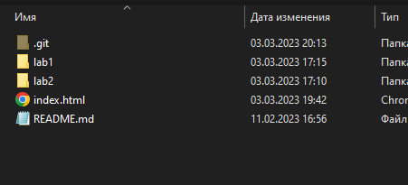
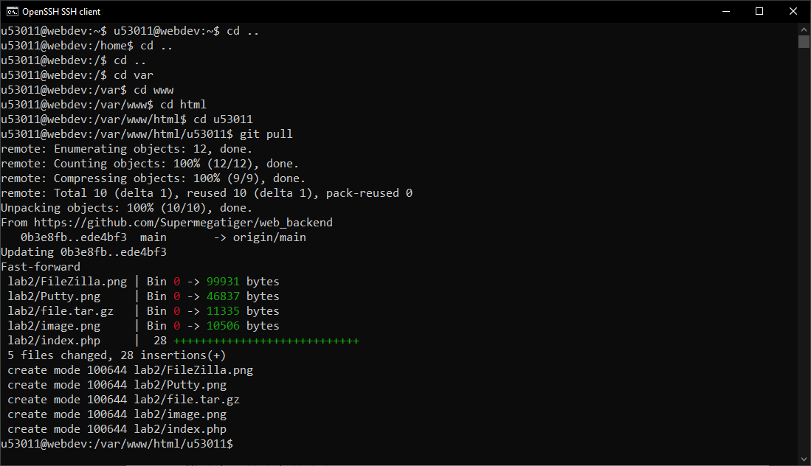
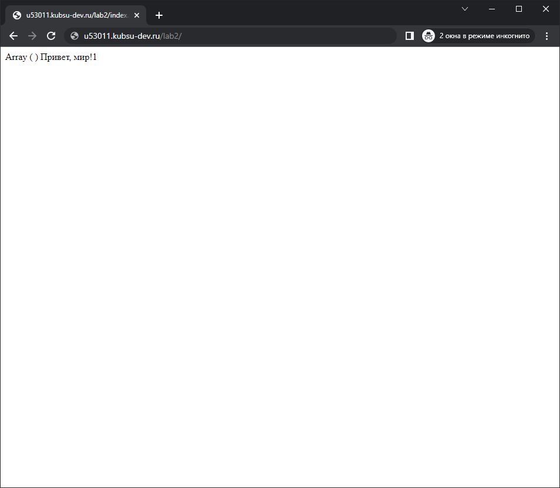
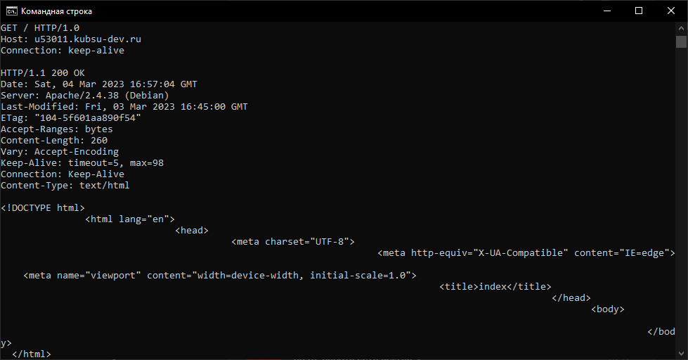
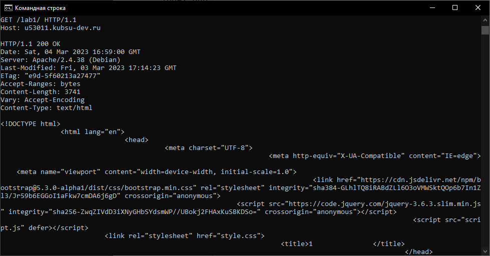
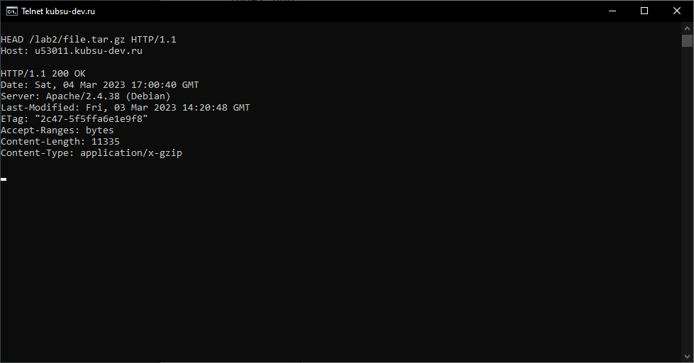
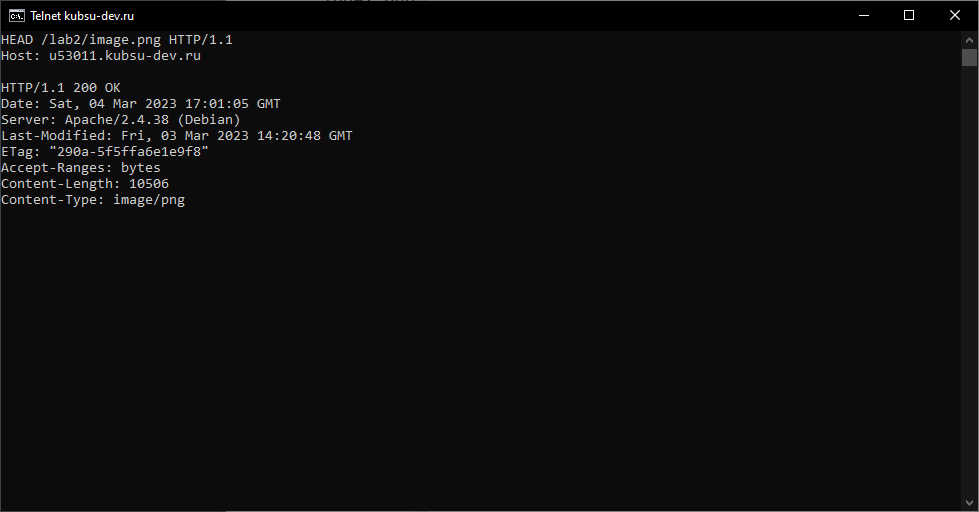
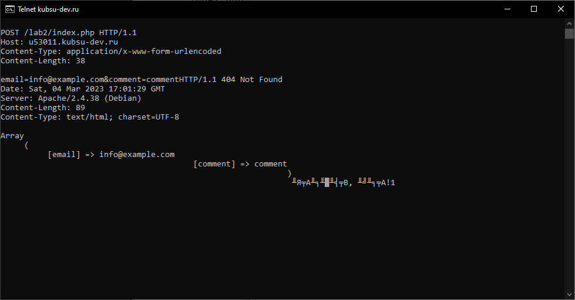
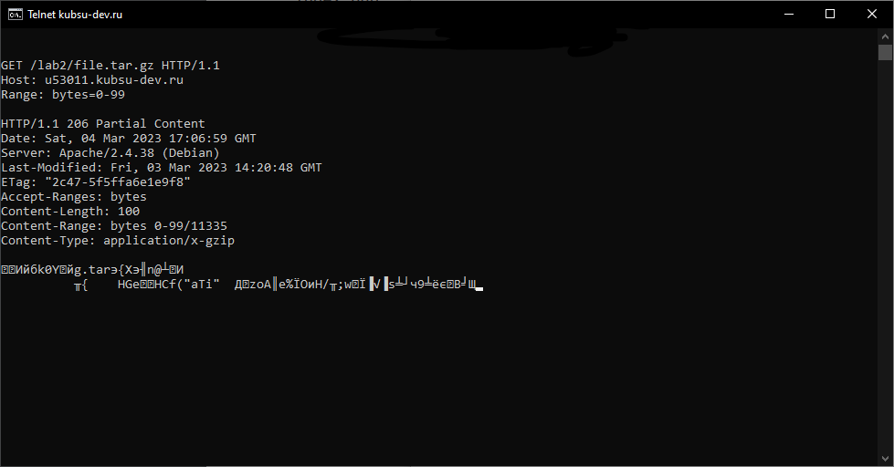
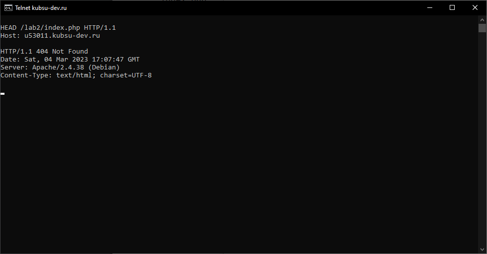

Создаем папку в локальном репозитории и копируем туда файлы из каталога files, а затем публикуем изменения репозитория (git push origin main)
На учебном сервере выполняем команду git pull
Проверяем работоспособность index.php
Заходим в консоль windows, вводим 'telnet kubsu-dev.ru 80' и вставляем HTTP запрос из буфера обмена для получения главной страницы методом GET в протоколе HTTP 1.0
Получаем внутреннюю страницу по адресу /lab1 методом GET
Определяем размер файла file.tar.gz в заголовке ответа Content-Length с помощью метода HEAD
Определяем медиатип ресурса /image.png в заголовке ответа Content-Type с помощью метода HEAD
Отправляем комментарий на сервер по адресу /index.php с помощью метода POST, указав тип и размер отправляемых данных
Получаем первые 100 байт файла /file.tar.gz с помощью метода GET, указав в заголовке Range количество байт для получения
Определяем кодировку ресурса /index.php в заголовке ответа Content-Type с помощью метода HEAD
Обновляем репозиторий на сервере для отображения созданного сайта